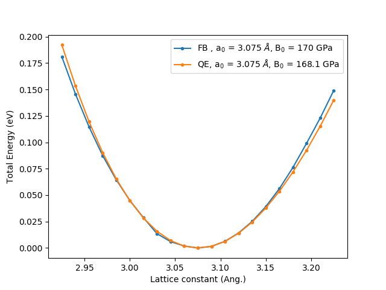

Quamtum espresso

Functional : LDA Ceperley/Alder Perdew/Zunger (1980)
Projection : Löwdin
Calculation the bulk modulus obtained by fitting to the Murnaghan equation. The energy is plotted relative to the minimum energy for each case, -169.19 eV/atom in Fireball and -164.093 eV/atom for Quantum espresso using the pseudopotentials V.pbe-mt_fhi.UPF . a0 and B0 are the equilibrium lattice constant and bulk modulus obtained by fitting to the Murnaghan equation of state.
Calculation the band dispersion for the bcc structure with the lattice constant of 4.5 Å
| |
Quamtum espresso |
|---|
The cut off radio of the orbitals in Fireball are rs = 8.0 (bohr), rp = 8.0 (bohr), rd = 8.0 (bohr), and was generate like qs = 0.5, qp = 0.0, qd = 3.0, .

| Base | Functional | Projection method | Crystal structure | Lattice parameter (Å) | Bulk modulus (GPa) |
| Vs200650p000650d225650 | LDA | NPA | bcc | 3.075 | 333 |
| Vs050800p000800d300800 | LDA | Lowdin | bcc | 3.078 | 305 |
| Vs050800p000800d300800 | LDA | Mulliken | bcc | 3.096 | 305 |
| Vs050750p000750d300750 | GGA | NPA | bcc | 3.080 | 325 |
| Vs000750p000750d300750 | GGA | Lowdin | bcc | 3.080 | 316 |
| Vs050600p000600d225600 | GGA | Mulliken | bcc | 3.086 | 425 |
The LDA calculation is done with the ncpp file to obtain 023.pp pseudopotential :
 |
 |
|---|
The GGA calculation is done with the ncpp file to obtain 023.pp pseudopotential :
 |
 |
|---|